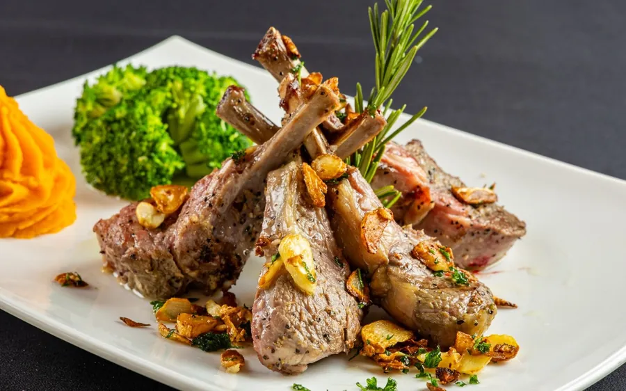

1. Café Vico
Fort Lauderdale · N Federal Hwy
Northern Italian supper club · family-run 30+ years
- Friday: 4:00–10:00 PM (OpenTable says 11)
- Drive: about 40–50 min from home in Boca, arrive about 6:00 PM
- Price: $$$ · entrées $30–60 · OpenTable "$31 to $50"
- Rating: OpenTable 4.8★ (3,145)
Low light, white tablecloths, a painted-sky ceiling with a chandelier, and signed Hollywood photos on nearly every wall. The piano bar has a small dance floor.
Why it fits you two
The warmest, most welcome-home room of the three. Marco and Claire Vico have run it for more than 30 years and still greet guests at the door, Danny DelRay plays the piano bar on Fridays, and there's room to dance if the song is right. OpenTable diners give it 4.8 across more than 3,000 reviews and rate the noise as moderate.
What to order
"We asked for a quiet table on this busy evening and got exactly that. A perfect, relaxed dinner after a busy day."OpenTable diner · 4.8★ (3,145)
Smart casual. Strip-mall parking on site, half a block north of Sunrise Blvd. Happy hour runs until 7 PM. Sit near the piano bar for the music, or ask for the main dining room or patio to talk. 1125 N Federal Hwy.
Photos: cafevicorestaurant.com